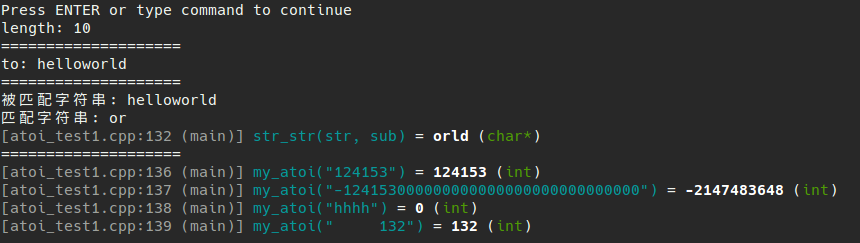

自己动手实现的四个库函数， 分别是:
- strlen
- strcpy
- strstr
- atoi
代码如下：
1
2
3
4
5
6
7
8
9
10
11
12
13
14
15
16
17
18
19
20
21
22
23
24
25
26
27
28
29
30
31
32
33
34
35
36
37
38
39
40
41
42
43
44
45
46
47
48
49
50
51
52
53
54
55
56
57
58
59
60
61
62
63
64
65
66
67
68
69
70
71
72
73
74
75
76
77
78
79
80
81
82
83
84
85
86
87
88
89
90
91
92
93
94
95
96
97
98
99
100
101
102
103
104
105
106
107
108
109
110
111
112
113
114
115
116
117
118
119
120
121
122
123
124
125
126
127
128
129
130
131
132
133
134
135
136
137
138
| #include <iostream>
#include <stdio.h>
#include <cstdio>
#include "dbg.h"
#include <string.h>
#include <string>
#include <assert.h>
#include <limits.h>
using namespace std;
size_t strlen(const char *str)
{
const char *s;
for (s = str; *s; s++) {}
return s - str;
}
char *strcpy(char *to, const char* from)
{
assert(to != NULL && from != NULL);
char *p = to;
while ((*p++ = *from++) != '\0');
return to;
}
char *str_str(const char *str, const char *sub)
{
assert(str);
assert(sub);
const char *str_p = str;
const char *start = str;
const char *sub_p = sub;
char *res = new char[100];
while (*start)
{
str_p = start;
sub_p = sub;
while (*str_p && *sub_p && *str_p == *sub_p)
{
str_p++;
sub_p++;
}
if (*sub_p == '\0')
{
strcpy(res, start);
return res;
}
start++;
}
return NULL;
}
int my_atoi(const char *str)
{
int num = 0;
int sign = 1;
const int len = strlen(str);
int i = 0, j = 0;
while (str[i] == ' ' && i < len) i++;
if (str[i] == '+') i++;
if (str[i] == '-')
{
sign = -1;
i++;
}
for (; i < len; i++)
{
if (str[i] < '0' || str[i] > '9')
break;
if (num > INT_MAX / 10 ||
(num == INT_MAX / 10 && (str[i] - '0') > INT_MAX % 10))
return sign == -1 ? INT_MIN : INT_MAX;
num = 10 * num + (str[i] - '0');
}
return sign * num;
}
int main(int argc, char *argv[])
{
char str[20] = "helloworld";
size_t res = strlen(str);
cout << "length: " << res << endl;
cout << "====================" << endl;
char to[20];
strcpy(to, str);
cout << "to: " << to << endl;
cout << "====================" << endl;
char *sub = "or";
dbg(str_str(str, sub));
cout << "====================" << endl;
dbg(my_atoi("124153"));
dbg(my_atoi("-124153000000000000000000000000000"));
dbg(my_atoi("hhhh"));
dbg(my_atoi(" 132"));
return 0;
}
|
运行结果:

前两个并不难，第三个稍微要考虑一些东西，最后一个需要注意边界情况。